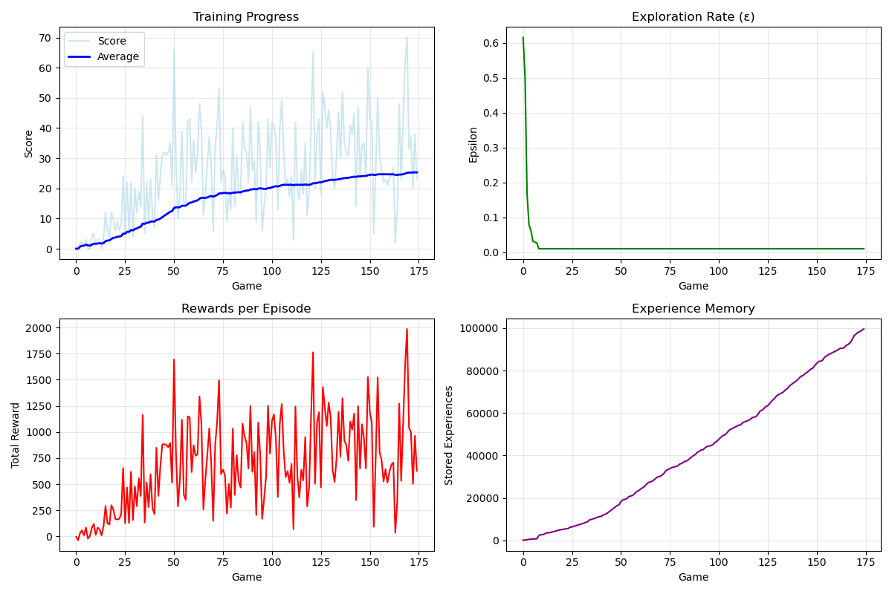

Snake Game with AI
Overview
A Python-based implementation of the classic Snake game featuring multiple AI algorithms that can play autonomously. This project combines game development with artificial intelligence, showcasing different approaches to solving the Snake game challenge, from traditional pathfinding to modern reinforcement learning.
Key Features
- Multiple AI implementations:
- Deep Q-Learning with prioritized experience replay
- A* Pathfinding with safety checks
- Hamiltonian Cycle for guaranteed completion
- Hybrid approach combining multiple strategies
- Comprehensive training visualization and metrics
- Multiple visual themes (Classic, Desert, Forest, Neon)
- Performance tracking and analysis
- Adjustable game speed and difficulty settings
Technical Capabilities
Game Engine
Custom game loop with collision detection and state management
Graphics System
SDL2-based rendering with sprite management
Input Handling
Event-driven input system with configurable controls
Technical Implementation
Reinforcement Learning Agent
The Q-learning implementation features:
- Neural network architecture: 11 input nodes, 256 hidden nodes, 3 output nodes
- PyTorch-based deep learning implementation
- Prioritized Experience Replay Memory
- Epsilon-greedy exploration with dynamic decay
Training Metrics Visualization
The visualization shows the AI's learning progress across multiple metrics:
- Training Progress: Shows increasing average score over time
- Exploration Rate: Demonstrates the epsilon decay strategy
- Rewards per Episode: Indicates improving performance
- Experience Memory: Shows the growing knowledge base
Pathfinding Implementations
- A* algorithm with Manhattan distance heuristic
- Hamiltonian cycle generation for guaranteed completion
- Hybrid approach with dynamic strategy switching
- Collision avoidance and safety systems
Development Status
Currently focusing on:
- Optimizing the reinforcement learning model's performance
- Implementing advanced hybrid strategies
- Expanding the visualization toolkit
- Enhancing the performance metrics system